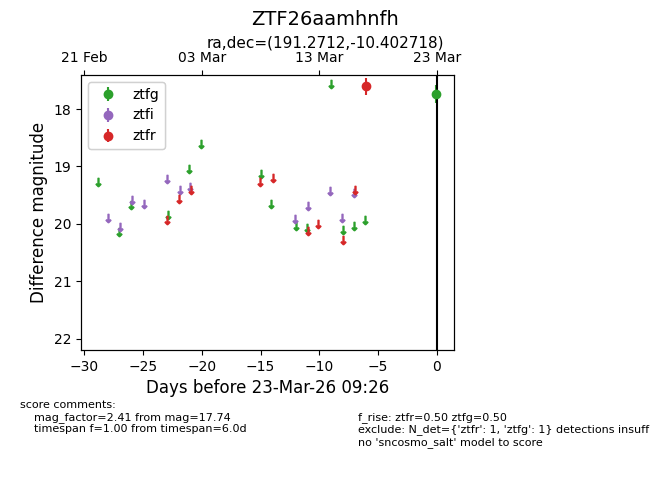
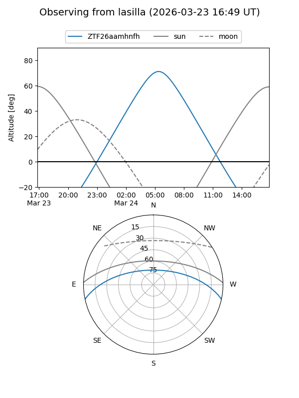
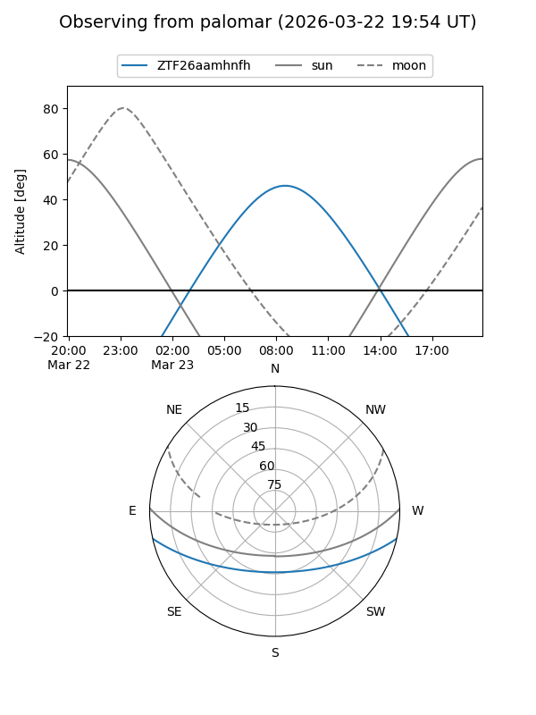

ZTF26aamhnfh
Target ZTF26aamhnfh at 2026-03-23 09:28
Aliases and brokers:
FINK: link
Lasair: link
ALeRCE: link
alt names
ZTF26aamhnfh (ztf,fink_ztf)
Coordinates:
equatorial (ra, dec) = 191.2712,-10.40272
equatorial (HMS+DMS) = 12:45:05.09,-10:24:09.79
galactic (l, b) = (300.3689,+52.43741)
Flags:
Photometry:
last ztfg=17.74, ztfr=17.61
1 ztfg, 1 ztfr detections
Lightcurve

Visibility


Additional plots